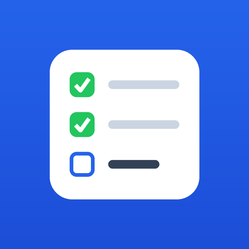

Крошечное Android-приложение с одной задачей: подключить ваш Google Keep к боту MyTasks прямо с телефона — без компьютера и без «инструментов разработчика».
У Google Keep, в отличие от Календаря и Google Tasks, нет обычного способа дать боту доступ через кнопку «Разрешить» на странице Google. Ключ к Keep можно взять только из вашей собственной сессии входа — а браузер отдаёт его лишь настоящему приложению, не веб-странице. Поэтому и нужно маленькое приложение: оно открывает вход Google, забирает ключ и показывает его вам, чтобы вы переслали его боту.
mytasks-keeplink.apk. Android спросит разрешение
установить приложение из этого источника — разрешите.accounts.google.com (вход) и android.clients.google.com (обмен
ключа). Приложение никуда больше не ходит.Честно про границу. Ключ, который вы получите, — постоянный и открывает
весь ваш Google-аккаунт, а не только Keep. Такой уж он у Google для Keep. Поэтому
отправляйте эту строку только боту MyTasks и никому больше. Отозвать доступ
в любой момент можно командой /unlink в боте или на странице
myaccount.google.com/permissions.
На iPhone не работает. Safari не отдаёт приложениям нужную часть входа, поэтому способа подключить Keep с айфона нет — только с компьютера. На iPhone можно вместо Keep выбрать Google Tasks, Google Таблицы или Notion: они подключаются кнопкой «Разрешить» прямо в боте, приложение для этого не нужно.
Keep — не единственный вариант. Списки можно держать в Google Tasks,
Google Таблицах или Notion — все три подключаются прямо
в боте обычной кнопкой согласия Google, без всякого APK. Выбрать бэкенд можно командой
/backend.